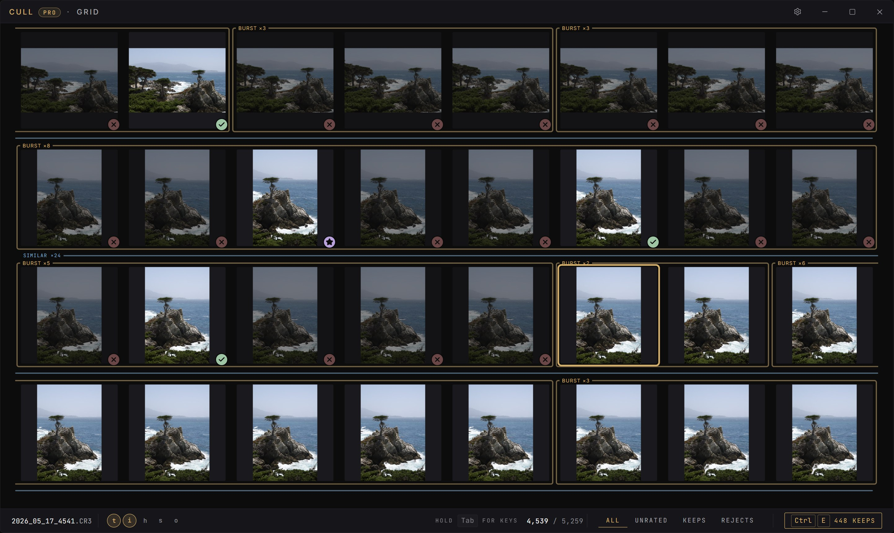
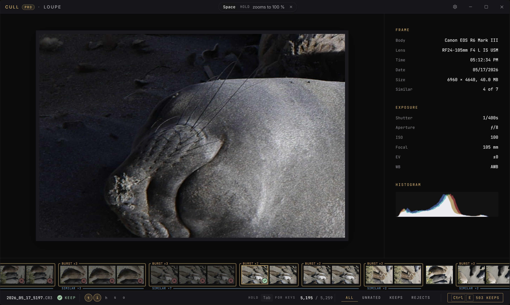

Press kit. The name, a description, the icon and three screenshots. Use them freely when writing about CULL. Please keep the icon as it is.
Name
CULL, in capitals.
Description
CULL is a desktop app for photographers that makes the first pass through a shoot fast: one key per frame to keep, reject or favorite, with every verdict saved where Lightroom reads it. It opens Canon, Sony, Nikon, Fujifilm, Olympus, Panasonic, Leica and DNG files and never changes the image inside them. Windows and Mac.
Made by
Oliver Søgaard-Andersen, a Danish developer. Contact through the support page.
Icon


Screenshots
The app on frames from a real shoot, at 2884 × 1724. Click one to open it at full size.




